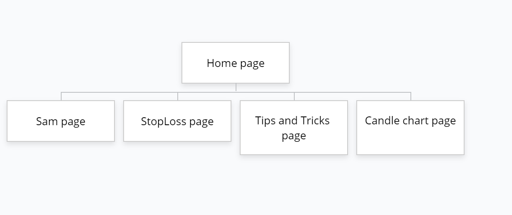
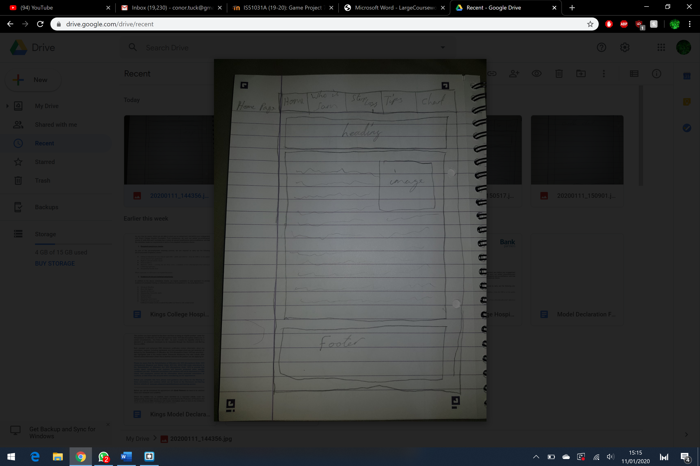
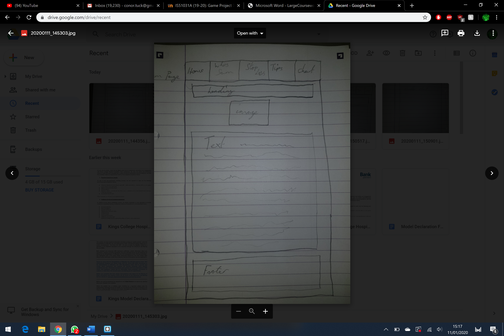
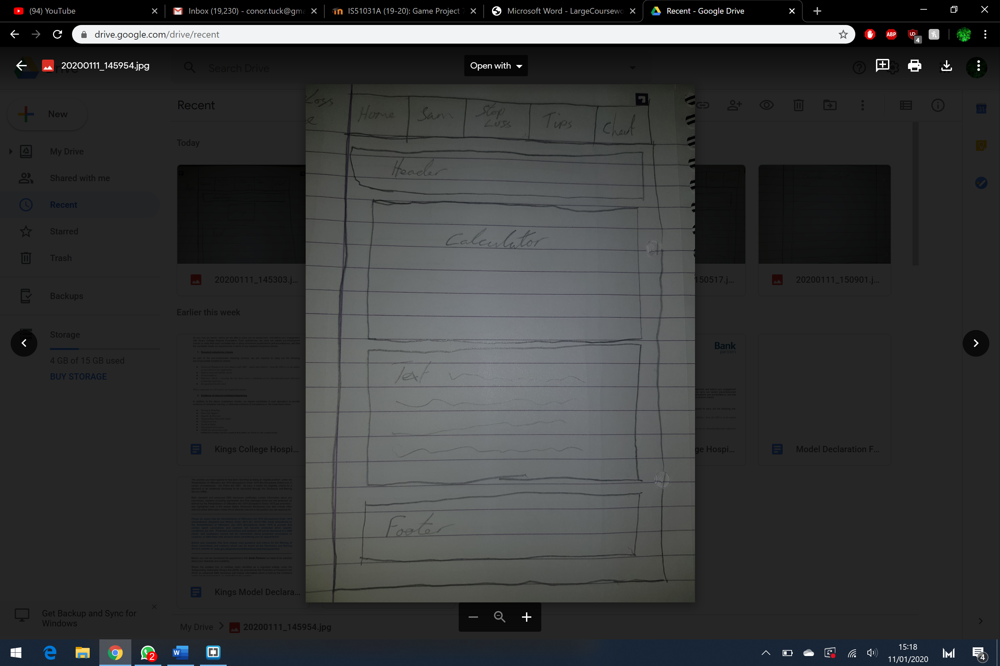
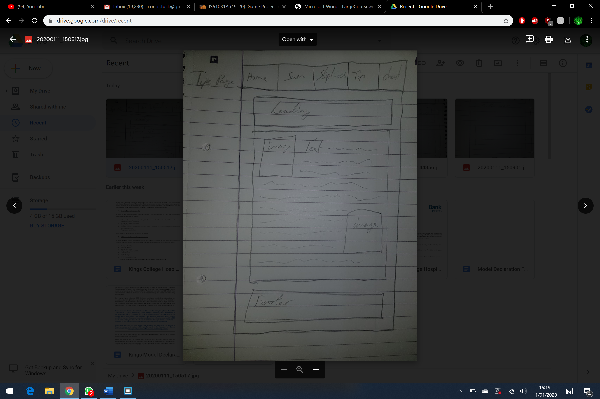
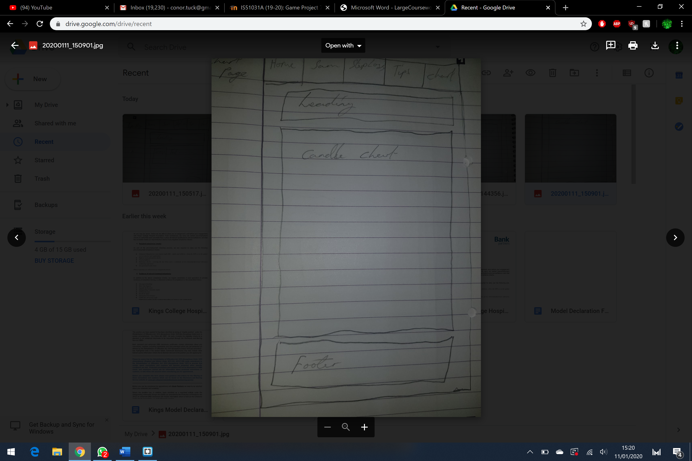

Report: Large Coursework
CONOR TUCK

Introduction:
My site is all to do with the crypto market. I discuss with one of my friends about what he knows about the crypto market especially bitcoin. My friend Sam is a crypto trader and is currently in charge of a group called Sam’s signals where he gives his knowledge and opinions on the current state of the crypto market. The site should also give you some tools that is used in trading and tell you how to use them.

Planning:
The structure of my page consists of a home page that is going to explain what is the crypto market and bitcoin. The home page will go into depth on how a crypto like bitcoin is created and used.
The next page is going to create authenticity about Sam the trader. This is very important as without authenticity the reader won’t believe the advice the website is trying to give.
The next few pages will be either tools and how to use them in the crypto market or tips and tricks that you can use when trading.
Accessibility on the website will be easy to use as we will have a navigation bar at the top with all the links that you will need to navigate between each of the pages. All the pages will be named appropriately so you have an Idea of what the page is about before opening it. The websites will suit a theme that suits the contents of each page. Many of the users will be using different types of viewing ports so its very important that the website is made to adapt to different screen sizes.
A lot of interactive features will have a colour change when the mouse hovers over it to show that you can click the link. 
The navigation bar will always be at the top of the web page as that is a uniform placement.

Implementation:
When creating the website, I had to do a lot of research on the bitcoin market to ensure the accuracy of what I was trying to portray. I would do this by googling the question at hand and looking at various websites to understand my point. These would be from websites such as bitcoin.com and coinmarketcap.com to read their definitions on e.g. bitcoin.
I also had to learn how to efficiently use CSS so that I could position different objects on the screen. I did this by watching various YouTube tutorials that would show me different ways I could utilise the box model.
JavaScript was something that I struggled with early in the module so making sure that was up to scratch was important. I would go on YouTube and look at a tutorial on go on w3school.com to find any answers that I would be looking for. For the background of the website I used a tutorial that I had found on YouTube to edit the canvas and then changed and varied the code to make it more suitable for what I wanted to represent on the website. This also helped me learn a lot.
For the fonts of the webpage I used 2 different font families from google fonts. Google fonts allows me to find a particular font style that they have on their website and link it directly to my work. 

Evaluation:
During my time working on the website I felt that I did particularly well at creating a theme for the website. The theme was closely related to one of my core topics; bitcoin. Another aspect I felt really worked great had to be the background animation. This consisted of 50 btc images floating at the edges of the website at random speeds at directions. This made a really cool effect and I managed to make it less disturbing by lowering the opacity to make it something you won’t notice when reading. Lastly, I felt that the tools that I was able to use from other websites such as the candle chart really fit in well with the them that I was going for in the website.
Unfortunately, there were a few things that I felt were pretty lack lustre. One of these being the footer. Currently the footer is a widget tool that displays the bitcoin market at real time. It was a great addition, but I felt that the CSS was lacking and that I could have made it stand out as a footer a bit more with some time. I would probably make the border more visible and standout so that it was clearer that it was a different section of the page itself.
Another would be the stop loss calculator. I felt that it lacked a lot of design and care that I could have given if I had a little more time. I would probably change around some of the positions and perhaps give the whole thing a border and separate background rather than let it float around. 
Lastly I felt that my candle chart page could have been done a lot better. I felt that the chart widget was a great addition but could have used a bit more text to maybe explain what it is that people are looking at  and how to use it. For a website that is about helping newcomers this is a must have but with the time constraints I was unable to do so.
As a bonus I also felt that the background animation could have used a bit of interactivity with maybe change the direction of travel according to the distance of the mouse. This was an Idea that I had but was unable to implement due to time constraints.


References:
Mike, freecodecamp.org,2018. [Online]. Available: https://www.youtube.com/watch?v=pQN-pnXPaVg – Tutorial I used to get a basic understanding of html.
Freecodecamp.org, YouTube, 2019 [Online]. Available: https://www.youtube.com/watch?v=1Rs2ND1ryYc – tutorial I used to gain a understanding on CSS.
Chris, Chris Courses, 2017, [Online]. Available: https://www.youtube.com/watch?v=EO6OkltgudE – Tutorial I used to learn how to edit on the canvas and draw shapes
Chris, Chris Courses, 2017, [Online]. Available: https://www.youtube.com/watch?v=83L6B13ixQ0 – tutorial I used to learn how to make many shapes and give them their own properties. The code I learned was partially used in my design for the background animation but was changed by utilising different shapes, text and values to create to background that you see. Also used CSS to change its properties and used it In a unique way on the webpage.
Bitcoin.org, 2019, [Online]. Available: https://bitcoin.org/en/how-it-works - used to understand what bitcoin is so that I could recreate a definition in my own words.
Coinmarketcap, widget, 2019, [Online]. Available: https://coinmarketcap.com/widget/ - The widget that I utilised in my footer. This was edited through CSS and I was also able to change the values from USD to GBP. 
Uk.tradingview,widget,2019,  [Online]. Available: https://uk.tradingview.com/widget/ - The widget was used on the candle chart page as a way to view btc candle chart. Through their site I was able to edit the size and chart portrayed to suit the website. CSS was also used for styling.
Bsilvia, image, 2018,  [Online]. Available: https://busy.org/@bsilvia/bitcoin-background - image used as background.
Carhugox, image, 2017,  [Online]. Available: https://favpng.com/png_view/bitcoin-bitcoin-cash-logo-png/YShRyR3B - image used on the home page. Was edited to have a smaller size than original.
B, Saelensminde, 2011, [Online]. Available: https://moneyweek.com/16061/you-need-to-keep-evolving-10402/i image used on tips and tricks page. Was edited through CSS.
TheVeryAwesomeGuy, image, 2013, [Online]. Available:https://www.roblox.com/library/112492026/A-Question-Mark-Steam-Image
Leonis, image, 2019, [Online]. Available: https://scrips.io/blog/lordbutterfly/the-market-is-red-again-you-say/ - image used on Sam page. Was edited using CSS


Site map: 
 
Wireframes:
Home page:
 
Sam page:
 
Stop loss page: 
 
Tips page:
 
Chart page:

 
